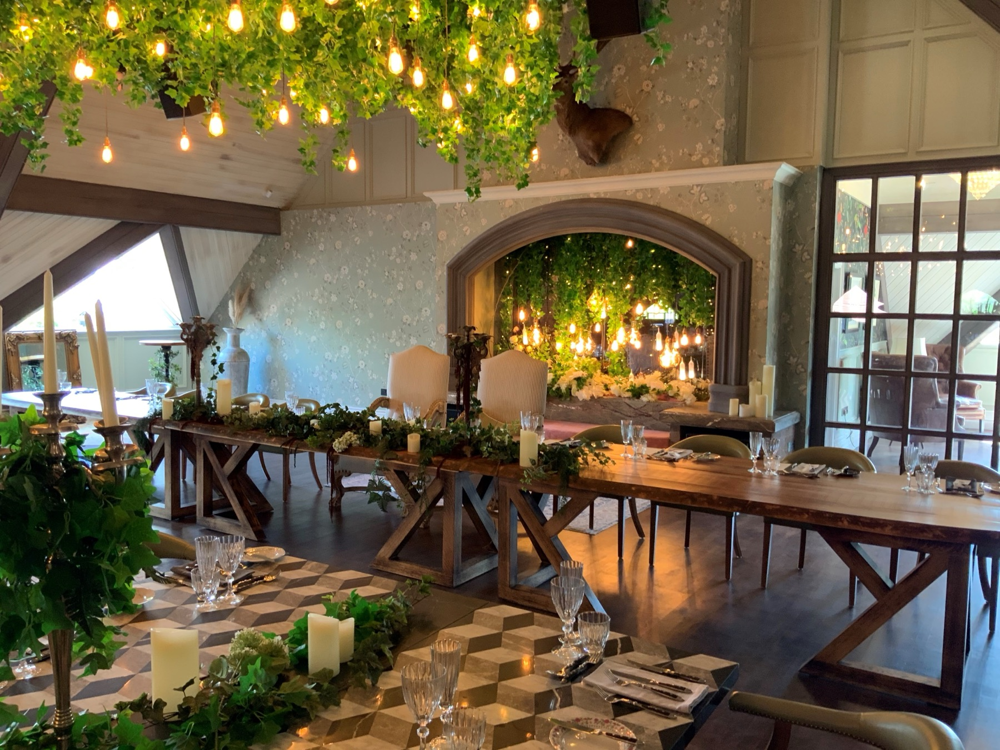
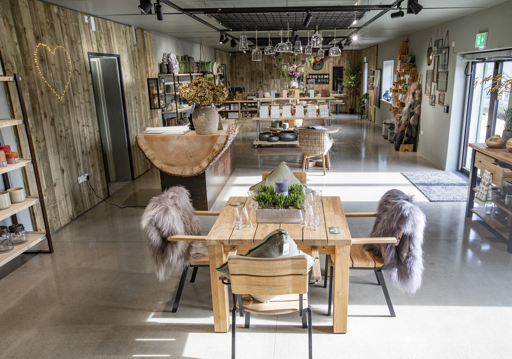
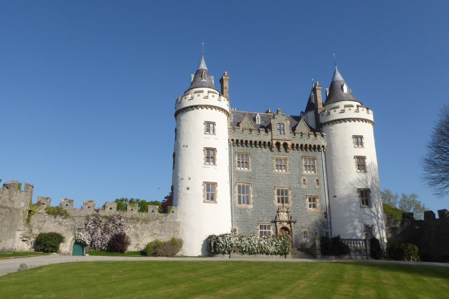

PROJECT PORTFOLIO
Built for people.
Built for place.
A selection of projects featured on the existing Hugh J O’Boyle website. Explore the sectors and places behind the work.
8 projects

Residential
Kensington Drive
Bangor

Education
Iveagh Nursery Unit
Rathfriland

Healthcare
Cumulus Heights
Downpatrick

Hospitality
Galgorm Resort & Spa
Ballymena

Hospitality
The Rabbit Hotel

Hospitality
New Visitor Centre & Cafe at Montalto
Ballynahinch

Historical buildings
Killyleagh Castle
Killyleagh

Historical buildings
Mew Optic — Titanic Walkway
Belfast